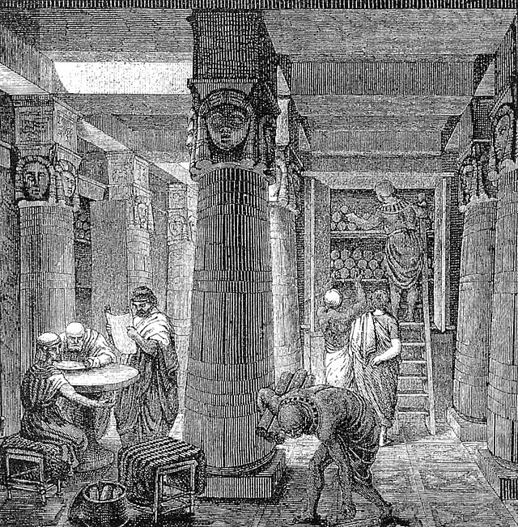

Biblioteca e bibliotecário ao longo da história
A importância da biblioteca para a preservação e conservação do conhecimento é inquestionável. Desde o inicio da humanidade o homem se preocupa em registrar o conhecimento por ele produzido. Ao bibliotecário foi destinada a missão de realizar os processos de: organização, preservação e efetivar a disseminação de todo o conhecimento registrado. As primeiras bibliotecas, na forma como conhecemos hoje, surgiram na Mesopotâmia, no segundo milênio a.C. Nessas bibliotecas foi constatada a “organização de documentos acompanhada de representações para fins de recuperação: tábuas de argilas eram protegidas por espécies de envelopes nos quais estavam dispostos resumos”
Biblioteca na linha do tempo
Entre os séculos VII e VIII a.C
Surgem as grandes bibliotecas da Antiguidade. A Biblioteca de Alexandria representa o ápice desse período. Durante sete séculos, entre os anos de 280 a.C a 416 d.C. A biblioteca reuniu o maior acervo de cultura e ciência da Antiguidade. É considerada a mais famosa e importante do mundo antigo. Sobreviveu a muitos saques e incêndios. Seu acervo era organizado em rolos, etiquetados com os nomes dos autores e títulos das obras, dispostos em pilhas. Mas, quanto ao seu acesso não se tem conhecimento se a biblioteca era reservada somente aos eruditos, ou se a um público mais amplo. Na Biblioteca de Alexandria o bibliotecário tinha um papel muito importante, pois as suas funções transcendiam as obrigações habituais. Além de ser encarregado de reorganizar as obras dos autores, atuava também como tutor dos príncipes reais, orientando-os nas leituras que deveriam fazer. Devido a esse papel de destaque o bibliotecário-chefe deveria possuir uma cultura humanista e ser um filólogo. Na Idade Média, predominaram as bibliotecas ligadas a ordens religiosas. Tanto no Ocidente, como no Oriente. Os mosteiros e conventos foram os responsáveis pela preservação da antiga cultura greco-romana e definiam-se como bibliotecas. Todos os grandes mosteiros possuíam um scriptorium, oficina de copistas em que o trabalho era distribuído aos monges. Mas, o acervo era fechado ao público em geral, pois os monges consideravam que a biblioteca era a guardiã dos livros.
imagem da Biblioteca de Alexandria
Entre os séculos XIII e XV
Importantes mudanças intelectuais e sociais afetaram a Europa. Uma delas foi o surgimento das universidades. Para atender os estudantes universitários foi criado o primeiro catálogo unificado, contendo o nome dos autores e obras, bem como a indicação das bibliotecas onde poderiam ser encontradas tais obras. Considera-se que foi a partir da criação das bibliotecas universitárias que o bibliotecário surgiu de fato como o organizador da informação e no Renascimento consolidou seu papel como disseminador do conhecimento. O Renascimento desperta nos homens de letras o interesse em organizar bibliotecas com coleções de livros raros e importantes. O objetivo era aumentar o prestígio junto aos pares e súditos. Nessa época foram criados novos tipos de livros. Surgiu uma maior preocupação com a situação física e a organização interna. Esses detalhes começaram a ser avaliados na organização das bibliotecas. Os bibliotecários foram chamados para estabelecer medidas técnicas com vistas a resolver o problema. Com o surgimento da imprensa no Ocidente a produção de livros foi estimulada. O livro ficou mais barato e mais fácil de distribuir. O advento da imprensa provocou o rompimento do monopólio que a Igreja exercia sobre a produção dos livros. As bibliotecas passaram a ter maior importância enquanto elemento social.
No século XVII
A relevância pública e social das bibliotecas ganhou impulso. Primeiramente nos países mais desenvolvidos da Europa e depois nos Estados Unidos “com o surgimento do conceito de biblioteca pública moderna, constituída de acervos gerais de livros e aberta gratuitamente ao público em horários regulares”. Desde então, a biblioteca pública passou a representar a modernidade, em oposição às bibliotecas da antiguidade e da idade medieval que a antecederam. A partir do século XIX O livro torna-se socialmente imprescindível e o bibliotecário passa a ter como missão promover a leitura e buscar leitores. Contudo, o contínuo desenvolvimento técnico-científico e a conseqüente explosão bibliográfica que o advento da imprensa ocasionou a partir do século XV, altera esse papel. O bibliotecário passa a desempenhar a função de “filtro que se interpõe entre a torrente de livros e o homem”. Desde então, o bibliotecário passa a desenvolver uma relação conflituosa com o livro, pois a quantidade de livros é tão gigantesca que supera os limites de seu tempo e de sua capacidade de assimilação do conteúdo que cada livro contém. Para dar conta dessa explosão bibliográfica, o bibliotecário passou a se preocupar mais com os processos técnicos, em especial a catalogação e a classificação, do que com os serviços aos leitores, sedimentando a imagem de um profissional tradicionalmente afundado entre livros.
Nos encontramos em pleno século XXI
O contexto mundial é marcado pela globalização que pressupõe acesso às novas tecnologias de informação e de comunicação, “o que reforça a informação como mola propulsora das transformações que afetam a sociedade contemporânea”. A ênfase dada à informação e ao seu acesso ocasiona transformações profundas nos sistemas de produção da economia mundial, fazendo surgir a sociedade da informação que, por sua vez, apóia-se no avanço tecnológico, intimamente vinculado com o processo de globalização. O advento da sociedade da informação impõe novos desafios aos profissionais bibliotecários. “É preciso assimilar que a sociedade da informação caracteriza-se pela possibilidade de acesso e capacidade de utilização da informação e do conhecimento” e “ […] sua consolidação depende […] do nível de satisfação dos usuários, ao longo dos dias”. Essa perspectiva leva ao surgimento da expressão profissional da informação. O profissional da informação, emerge, portanto, com a sociedade da informação e refere-se àqueles que têm como objeto de trabalho a informação. Por isso, esse profissional deve procurar estar sempre atualizado, capacitar-se para desenvolver pesquisa e manusear suportes variados de informação, privilegiando sempre as demandas informacionais do público.